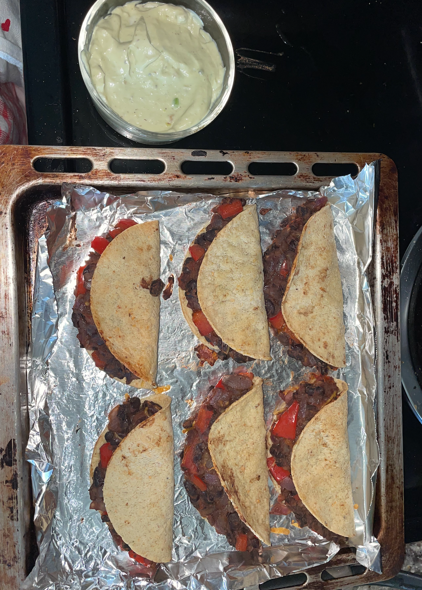

Taco Mode

Who doesn't like tacos, am I right?
Ingredientes
- 2 pounds of chicken breasts
- Tortillas
- 1 avocado
- 2 limes
- 1 red onion
- 2 peppers, whichever color prefieres
- 9 garlic cloves
- Seasoning of your choice
Instruciones
- Season chicken, cut up into smaller pieces, throw on a medium skillet with olive oil and flip as necessary
- While chicken is cooking, chop up onion and pepper to carmelize on a low-medium pan with one teaspoon of ghee butter, olive oil, and spices. Leave red pepper for the guac
- Add 5 cloves of garlic to onion and pepper skilllet
- Cut and smash up avocado in bowl. Add lime, spices, and red onion. A little salt and pepper, too
- Heat up tortillas in toaster oven or toaster if you have one
- Remove chicken when ready, and keep onion+peppers on low
- Add chicken, guac, and onion+pepper combo to the toasted tortillas, garnish with some lime, and enjoy!